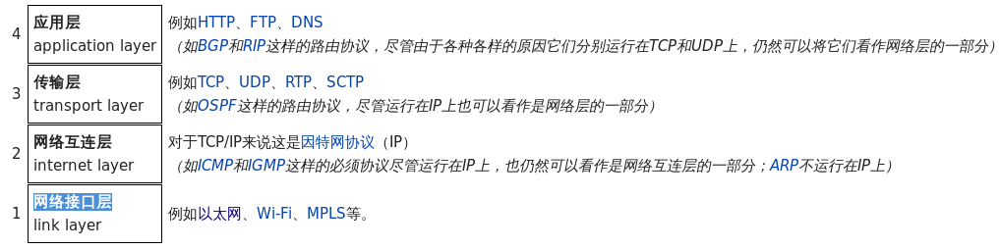
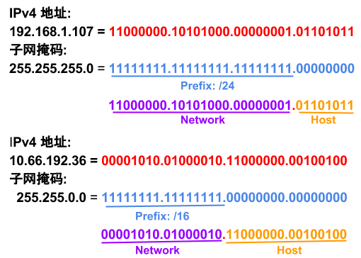
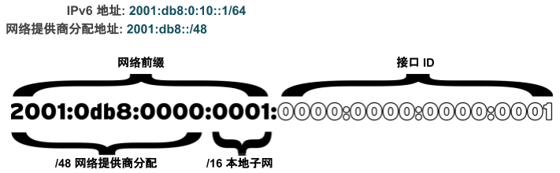

BOOTPROTO=none IPADDR0=172.25.X.10 PREFIX0=24 GATEWAY0=172.25.X.254 DEFROUTE=yes DNS1=172.25.254.254
Linux 网络
Table of Contents
基本概念
本部分包括 Linux 网络基本概念。
TCP/IP 四层模型

-
应用层 - 常见的应用层协议有：SSH，HTTPS，NFS/CIFS，SMTP
-
传输层 - 传输层协议有 TCP 和 UDP，TCP 属于可靠连接传输协议，UDP 无连接数据包传输协议
-
网络互连层 - 负责将数据从源主机传输到目的主机，任意主机都有一个 IP 地址和子网掩码来确定网络地址，路由器用来连接网络。这一层的协议有 ICMP，
ping命令就是基于 ICMP 协议，ping命令发送一个 ICMP ECHO_REQUEST 请 求包，成功则返回 ICMP ECHO_REPLY 确认。 -
网络接口层 - 提供连接到物理媒介，如常见的有线以太网（802.3）和无线WLAN（802.11），每一个物理网络设备都有一个物理地址（MAC）用来在网络中唯一标识目的地址。
IPv4 地址

-
IPv4 地址有两部组成：网络部分(Network)和主机部分(Host)，同一子网的所有主机可以不经过路由而连通彼此，同一子网中主机部分唯一。
-
子网掩码用来区分 Network 和 Host，如上图，10.66.192.36 子网掩码为 255.255.0.0，即前缀是 16，则为 10.66 网段。
-
广播地址：当主机部分所有为位置为1是就为广播地址，如上两个地址的广播地址分别为 192.168.1.255，10.66.255.255.
IPv6 地址

-
IPv6 地址: IPv6 地址是一个由 32 个十六进制（128 个二进制）的数字组成，且 32 个十六进制位分为 8 组，每组 4 位。为方便书写，定义了如下规则：
-
每 4 位小组中的前缀 0 可以省略，例如
2001:0db8:0000:0010:0000:0000:0000:0001简写为2001:db8:0:10:0:0:0:1 -
一组或多组连续 0 必须以一个 :: 块来合并，例如
2001:db8:0:10:0:0:0:1需写为2001:db8:0:10::1 -
所有可能出现字母的十六进制位必须使用小写字母 a 到 f
-
如果在 IPv6 地址后面包括 TCP 或 UDP 网络端口，则需将 IPv6 地址括在方括号中，例如
[2001:db8:0:10::1]:80
-
-
IPv6 地址有两部组成:
网络前缀和接口 ID。与 IPv4 不同的是，IPv6 具有一个标准的子网掩码/64，用于几乎所有的普通地址。在此情况下，地址的一半是网络前缀，另一半是接口 ID。这意味着单个子网可以根据需要容纳任意数量的主机。 -
子网分配: 通常，网络提供商将为组织分配一个较短的前缀，如/48。这会保留其余网络部分以用于通过这一分配的前缀来指定子网。处理已分配的48位，将保留16位以用于子网（最多 65536 个子网）。同一子网上的任何两个子网接口都不能具有相同
接口 ID，接口 ID可标识子网上的特定接口。
| 地址/网络 | 用途 | 描述 |
|---|---|---|
::1/128 |
localhost |
等效于 IPv4 中的 |
:: |
未指定的地址 |
等效于 IPv4 中的 |
::/0 |
IPv6 网络默认路由 |
路由表中的默认路由与此网络匹配；此网络的路由器是在没有更好路由的情况下发送所有流量的位置。 |
2000::/3 |
全局单播地址 |
“普通”的 IPv6 地址目前由 IANA 从该空间进行分配。这等同于范围从 |
fd00::/8 |
唯一本地地址 (RFC 4193) |
IPv6 没有 RFC 1918 专用地址空间的直接等效对象，尽管这很接近。站点可以使用这些以在组织中自助分配可路由的专用 IP 地址空间，但是这些网络不能在全局 Internet 上使用。站点必须随机从该空间中选择一个 /48，但是它可以正常将分配空间划分为 /64 网络 |
fe80::/64 |
本地链接地址 |
每个 IPv6 接口自动配置一个本地链接地址，该地址仅在该网络中的本地链接中有效 |
ff00::/8 |
多播 |
等效于 IPv4 中的 |
NetworkManager
NetworkManager 是监控和管理网络设置的守护进程。除了该守护进程外，还有一个提供网络状态信息的 GNOME 通知区域小程序。命令行和图形工具与 NetworkManager 通信，并将配置文件保存在 /etc/sysconfig/network-scripts 目录中。对于 NetworkManager：
-
一个 device(设备) 是一个网络接口。
-
一个 connection(连接) 是一组用来配置
设备的设置的集合。 -
对于任何一个
设备，在同一时间只能有一个连接处于活动状态。可能存在多个连接，以供不同设备使用或者以便为同一设备更改配置。 -
每个
连接具有一个用于标识自身的名称或 ID。 -
连接的持久配置存储在 /etc/sysconfig/network-scripts/ifcfg-
name中，其中name是连接的名称。如果需要，可以手动编辑此文件。 -
nmcli 是一个实用小工具，可用于通过 shell 提示符来创建和编辑连接文件。
ifcfg 文件的一般配置属性
|
Note
|
/etc/sysconfig/network-scripts/ifcfg-<name> 文件可以用来配置网络设备和连接。 |
通常情况，编辑 /etc/sysconfig/network-scripts/ifcfg-<name> 文件，添加下表中一些常见配置:
| 静态 | 动态 | 通用 |
|---|---|---|
BOOTPROTO=dhcp |
DEVICE=eth0 NAME=eth0 ONBOOT=yes UUID=f3e8dd32-3... USERCTL=yes |
一般配置文件修改完成后需要重新加载网络连接，具体通过：
# nmcli con reload
# nmcli con down "eth0"
# nmcli con up "eth0"nmcli con mod nm-settings 与 ifcfg-* 指令的比较
| nmcli con mod | ifcfg-* 文件 | 作用描述 |
|---|---|---|
|
|
IPv4 以静态方式配置。 |
|
|
IPv4 以动态的方式分配地址，将从 DHCPv4 服务器中查找配置设置。如果还设置了静态地址，则在我们从 DHCPv4 中获取信息之前，将不会激活这些静态地址。 |
|
|
设置 IPv4 地址、网络前缀和默认网关。如果一个连接设置了多个地址，则 ifcfg-* 指令将以 1、2、3 等等结尾，而不是以 0 结尾。 |
|
|
修改 /etc/resolv.conf 以使用此 nameserver |
|
|
修改 /etc/resolv.conf 以在 search 指令中使用此域。 |
|
|
忽略来自 DHCP 服务器的 DNS 服务器信息 |
|
|
IPv6 地址以静态方式配置 |
|
|
将使用路由器播发中的 SLAAC 来配置网络设置。 |
|
|
将使用 DHCPv6（而不使用 SLAAC）来配置网络设置 |
|
|
设置静态 IPv4 地址、网络前缀和默认网关。如果为连接设置了多个地址，IPV6_SECONDARIES 将采用空格分隔的地址/前缀定义的双引号列表。 |
|
|
修改 /etc/resolv.conf 以使用此 nameserver。与 IPv4 完全相同 |
|
|
修改 /etc/resolv.conf 以在 search 指令中使用此域。与 IPv4 完全相同。 |
|
|
忽略来自 DHCP 服务器的 DNS 服务器信息。 |
|
|
在启动时自动激活此连接。 |
|
|
此连接的名称。 |
|
|
连接与具有此名称的网络接口绑定。 |
|
|
连接与具有此 MAC 地址的网络接口绑定。 |
域名解析配置文件
/etc/hosts 文件中定义着 IP 地址和域名的映射关系
# cat /etc/hosts
127.0.0.1 localhost localhost.localdomain localhost4 localhost4.localdomain4
::1 localhost localhost.localdomain localhost6 localhost6.localdomain6
10.66.192.101 master.example.com当通过 /etc/hosts 不能够完成域名解析时 /etc/resolv.conf 用来完成域名解析。这个文件中定义了一系列域名服务器和search：
# cat /etc/resolv.conf
# Generated by NetworkManager
nameserver 8.8.8.8|
Note
|
/etc/resolv.conf 文件会在网络接口重起时自动重写，设置 PEERDNS=no 属性可以阻止被自动更新。nmcli con mod eth0 ipv4.ignore-auto-dns yes 可以用来设定这个属性
|
基本命令
| 命令 | 描述 |
|---|---|
在此系统上持久设置主机名。 |
|
显示/管理当前网络接口地址配置。 |
|
显示/管理网络设备 |
|
显示/管理路由信息 |
|
显示所有网络接口的 NetworkManager 状态。 |
|
列出所有连接。 |
|
列出 name 连接的当前设置。 |
|
添加一个名为 name 的新连接。 |
|
修改 name 连接。 |
|
告知 NetworkManager 重新读取配置文件（在手动编辑配置文件之后使用）。 |
|
激活 name 连接。 |
|
在网络接口 dev 上停用并断开当前连接。 |
|
删除 name 连接及其配置文件。 |
ip addr
显示所有设备和地址信息
# ip addr
# ip addr show eth0ip link
显示设备网络接收和统计数据
# ip -s link
# ip -s link show eth0|
Note
|
ip 用来显示/管理路由、设备、地址、等。
|
ip route
显示路由信息
# ip routeping
ping 用来检测网络的连通性
# ping -c2 10.66.193.254
PING 10.66.193.254 (10.66.193.254) 56(84) bytes of data.
64 bytes from 10.66.193.254: icmp_seq=1 ttl=255 time=2.05 ms
64 bytes from 10.66.193.254: icmp_seq=2 ttl=255 time=6.90 ms
--- 10.66.193.254 ping statistics ---
2 packets transmitted, 2 received, 0% packet loss, time 1001ms
rtt min/avg/max/mdev = 2.059/4.482/6.906/2.424 mstracepath
tracepath 用来跟踪远程地址
# tracepath 10.66.193.254
1?: [LOCALHOST] pmtu 1500
1: 10.66.193.253 2.605ms reached
1: 10.66.193.253 2.263ms reached
Resume: pmtu 1500 hops 1 back 1traceroute
traceroute 用来跟踪远程地址
# traceroute -T 10.66.193.254
traceroute to 10.66.193.254 (10.66.193.254), 30 hops max, 60 byte packets
1 gateway (10.66.193.254) 3.080 ms 3.925 ms 5.163 ms|
Note
|
tracepath/traceroute 默认发送 UDP 包给远程地址。traceroute 可以指定发送包的类型，ICMP (-I)，TCP(-T)。 |
ss
|
Note
|
ss 主要用来显示一些端口服务相关的信息。
|
显示所有 TCP UDP 连接信息
# ss -tu
Netid State Recv-Q Send-Q Local Address:Port Peer Address:Port
udp ESTAB 0 0 10.66.193.160:49795 51.15.41.135:ntp
udp ESTAB 0 0 10.66.193.160:34809 59.46.44.253:ntp
udp ESTAB 0 0 2620:52:0:42c0:5054:ff:fee0:d006:47532 2600:3c01::f03c:91ff:fe93:b0d1:ntp
tcp ESTAB 0 0 10.66.193.160:ssh 10.66.192.147:36872|
Note
|
NOTE: /etc/services 中保存着所有端口和服务对应的信息。
|
显示所有监听的 TCP Socket 及其对应的服务
# ss -ltp| Option | 描述 |
|---|---|
-n |
显示数字(端口号)而不是服务名 |
-t |
显示 TCP 连接 |
-u |
显示 UDP 连接 |
-l |
仅显示 LISTEN 状态的 Socket |
-a |
显示所有（listening 和 established） Socket |
-p |
显示使用 Socket 的进程信息 |
nmcli con
显示所有连接
# nmcli connection show
NAME UUID TYPE DEVICE
eth0 0e612544-0d1e-4487-83d8-d4f054e929d8 802-3-ethernet eth0
virbr0 405c39c0-8b20-475e-a241-137f74982308 bridge virbr0显示所有活跃连接
# nmcli connection show --active
NAME UUID TYPE DEVICE
eth0 0e612544-0d1e-4487-83d8-d4f054e929d8 802-3-ethernet eth0
virbr0 405c39c0-8b20-475e-a241-137f74982308 bridge virbr0显示某一个连接的详细信息
# nmcli connection show eth0
....|
Note
|
nmcli 同来管理网络配置和设备。另外 etc/sysconfig/network-scripts 中保存着网络和设备相关的配置文件。
|
nmcli dev
显示设备状态
# nmcli device status
DEVICE TYPE STATE CONNECTION
virbr0 bridge connected virbr0
eth0 ethernet connected eth0
lo loopback unmanaged --
virbr0-nic tun unmanaged --显示某一个设备的详细信息
# nmcli device show eth0
GENERAL.DEVICE: eth0
GENERAL.TYPE: ethernet
GENERAL.HWADDR: 52:54:00:E0:D0:06
GENERAL.MTU: 1500
GENERAL.STATE: 100 (connected)
GENERAL.CONNECTION: eth0
GENERAL.CON-PATH: /org/freedesktop/NetworkManager/ActiveConnection/0
WIRED-PROPERTIES.CARRIER: on
IP4.ADDRESS[1]: 10.66.193.160/23
IP4.GATEWAY: 10.66.193.254
IP4.ROUTE[1]: dst = 10.72.17.5/32, nh = 10.66.193.254, mt = 100
IP4.DNS[1]: 10.72.17.5
IP4.DNS[2]: 10.68.5.26
IP4.DOMAIN[1]: pek.redhat.com
IP6.ADDRESS[1]: 2620:52:0:42c0:5054:ff:fee0:d006/64
IP6.ADDRESS[2]: fe80::5054:ff:fee0:d006/64
IP6.GATEWAY: fe80::e6d3:f1ff:fe9a:2cc3
IP6.ROUTE[1]: dst = 2620:52:0:42c0::/64, nh = ::, mt = 100nmcli con add
添加一个动态连接
# nmcli connection add con-name "conn-dynamic" type ethernet ifname eth0
Connection 'conn-dynamic' (eaf49242-0708-43f7-aa98-10e62c29dfb4) successfully added.添加一个静态连接
# nmcli connection add con-name "conn-static" ifname eth0 autoconnect no type ethernet ip4 10.66.192.100/24 gw4 10.66.193.254
Connection 'conn-static' (874025b6-7a32-4ab7-873e-255aad44f2b6) successfully added.启动静态连接
# nmcli connection up "conn-static"启动动态连接
# nmcli connection up "conn-dynamic"nmcli con modify
关闭自动连接
# nmcli connection modify "conn-static" connection.autoconnect no修改 ipv4.dns
# nmcli connection modify "conn-static" ipv4.dns 10.68.5.26添加备份 DNS
# nmcli connection modify "conn-static" +ipv4.dns 8.8.8.修改 ip 地址
# nmcli connection modify "conn-static" ipv4.addresses 10.66.192.100/24添加备份 ip 地址
# nmcli connection modify "conn-static" +ipv4.addresses 10.10.10.10/16hostname
显示 /etc/hostname 中配置的 hostname
$ hostname
ksoong.redhat.comhostnamectl
配置 hostname
$ hostnamectl set-hostname master.example.com
$ hostnamectl status
Static hostname: master.example.com
Icon name: computer-vm
Chassis: vm
Machine ID: d8bed309f4294655bb32a6fae3d9b8e9
Boot ID: f6013904460948db93109440302364f8
Virtualization: kvm
Operating System: Red Hat Enterprise Linux Server 7.3 (Maipo)
CPE OS Name: cpe:/o:redhat:enterprise_linux:7.3:GA:server
Kernel: Linux 3.10.0-514.el7.x86_64
Architecture: x86-64
# cat /etc/hostname
master.example.com|
Note
|
老版本的 Linux, hostname 保存在 /etc/sysconfig/network。
|
getent hosts
getent hosts HOSTNAME 用来测试域名解析
$ getent hosts master.example.com
192.168.122.101 master.example.com masterhost
host HOSTNAME 用来测试 DNS 服务器的连接性
# host master.example.com